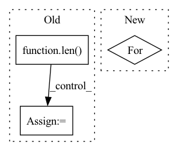

Pattern ID :1821
Before Change
laterals = [lateral_conv(inputs[i]) for i, lateral_conv in enumerate(self.lateral_convs)]
laterals.append(self.psp_forward(inputs))
used_backbone_levels = len( laterals)
for i in range(used_backbone_levels-1, 0, -1):
laterals[i-1] += F.interpolate(laterals[i], size=laterals[i-1].shape[2:], mode="bilinear", align_corners=False)
fpn_outs = [self.fpn_convs[i](laterals[i]) for i in range(used_backbone_levels-1)]
fpn_outs.append(laterals[-1])After Change
f = self.ppm(features[-1])
fpn_features = [f]
for i in reversed(range(len(features)-1)):
feature = self.fpn_in[i](features[i])
f = feature + F.interpolate(f, size=feature.shape[-2:], mode="bilinear", align_corners=False)
fpn_features.append(self.fpn_out[i](f))
In pattern: SUPERPATTERN
Frequency: 4
Non-data size: 3
Instances Fragment ID: 7079934
Project Name: sithu31296/semantic-segmentation
Commit Name: af9bcfd5c4642c42b0fa9e1b2af46eb45ec9063d
Time: 2021-08-27
Author: sithu31296@gmail.com
File Name: models/heads/upernet.py
M Class Name: UPerHead
N Class Name: UPerHead
M Method Name: forward(2)
N Method Name: forward(2)
M Parent Class: nn.Module
N Parent Class: nn.Module
M File Name: models/heads/upernet.py
N File Name: models/heads/upernet.py
M Start Line: 53
M End Line: 63
N Start Line: 44
N End Line: 53
Before Change
outputs = [inters[0]]
for i, conv in enumerate(self.output_convs):
out = F.interpolate(outputs[-1], scale_factor=0.5, mode="nearest") // resize(P3td)
if i < len( self.output_convs) - 1:
out = self.fuse([x[i+1], inters[i+1], out]) // P4in + P4td + resize(P3td)
else:
out = self.fuse([inters[i+1], out]) // P7in + resize(P6td)
outputs.append(conv(out)) // P4out = conv(P4in + P4td + resize(P3td))
return outputsAfter Change
// bottom-up
outs = [None] * self.num_levels
outs[0] = tds[0]
for i in range(self.num_levels - 2):
outs[i+1] = self.out_fuses[i]([x[i+1], tds[i+1], self.downsample(tds[i])]) // P4in + P4td + resize(P3td)
outs[-1] = self.out_fuses[-1]([x[-1], self.downsample(tds[-2])]) // P7in + resize(P6td)
return outs Fragment ID: 7079935
Project Name: gau-nernst/vision-toolbox
Commit Name: 0844b6bcb142e63b09cf6ae44e5087c20d52c380
Time: 2022-04-10
Author: gau.nernst@yahoo.com.sg
File Name: vision_toolbox/necks.py
M Class Name: BiFPNLayer
N Class Name: BiFPNLayer
M Method Name: forward(2)
N Method Name: forward(2)
M Parent Class: nn.Module
N Parent Class: nn.Module
M File Name: vision_toolbox/necks.py
N File Name: vision_toolbox/necks.py
M Start Line: 163
M End Line: 180
N Start Line: 160
N End Line: 172
Before Change
innerProduct = codebook @ codebook.T
// orthogonal regularization
weakCodebookLoss.append(self._auxLoss(innerProduct, torch.eye(innerProduct.shape[0], device=innerProduct.device, dtype=innerProduct.dtype)))
m = len( features)
for i in range(m):
for j in range(i + 1, m):
// [n, h, w] := ([n, h, w, c] * [n, h, w, c]).sum(-1)
interProduct = (features[i] * features[j]).sum(-1)
// feature from different group should be orthogonal
weakFeatureLoss.append(2 * self._auxLoss(interProduct, torch.zeros_like(interProduct)))
intraProduct = (features[i] * features[i]).sum(1)After Change
weakCodebookLoss = list()
for raws, codes, codebooks, k, logits, spread in zip(allFeatures, allCodes, allCodebooks, self._k, allLogits, self._spreadLoss):
for raw, code, codebook, logit in zip(raws, codes, codebooks, logits):
// weakFeatureLoss.append(self._alignLoss(raw, F.one_hot(code, k).float(), codebook))
weakCodebookLoss.append(spread(codebook))
// weakCodebookLoss.append(self._l2Reg(raw, -1))
return dLoss, (sum(weakCodebookLoss), 0.0, 0.0), (restored, allTrues, allLogits) Fragment ID: 7079940
Project Name: xiaosu-zhu/mcquic
Commit Name: 753fa7e4e7c9bf19e23ef12ea0062e240077eaf8
Time: 2021-11-28
Author: xiaosu.zhu@outlook.com
File Name: src/mcqc/models/whole.py
M Class Name: WholePQBig
N Class Name: WholePQBig
M Method Name: forward(3)
N Method Name: forward(3)
M Parent Class: nn.Module
N Parent Class: nn.Module
M File Name: src/mcqc/models/whole.py
N File Name: src/mcqc/models/whole.py
M Start Line: 44
M End Line: 66
N Start Line: 50
N End Line: 56
Before Change
nn.init.constant_(self.bias, val=0)
def forward(self, x, node_embeddings):
if len( node_embeddings.shape) ==2:
node_num = node_embeddings.shape[0]
supports = F.softmax(F.relu(torch.mm(node_embeddings, node_embeddings.transpose(0, 1))), dim=1)
else:
node_num = node_embeddings.shape[1]After Change
def forward(self, x, supports):
x_g = []
support_set = []
for support in supports:
support_ks = [torch.eye(support.shape[0]).to(support.device), support]
for k in range(2, self.cheb_k):
support_ks.append(torch.matmul(2 * support, support_ks[-1]) - support_ks[-2])
support_set.extend(support_ks) Fragment ID: 7079924
Project Name: zezhishao/basicts
Commit Name: 4adec9a0403655584de5a4e97e41611c179b0f1e
Time: 2023-02-26
Author: 864453277@qq.com
File Name: basicts/archs/arch_zoo/megacrn/megacrn_arch.py
M Class Name: AGCN
N Class Name: AGCN
M Method Name: forward(3)
N Method Name: forward(3)
M Parent Class: nn.Module
N Parent Class: nn.Module
M File Name: basicts/archs/arch_zoo/megacrn/megacrn_arch.py
N File Name: basicts/archs/arch_zoo/megacrn/megacrn_arch.py
M Start Line: 16
M End Line: 25
N Start Line: 18
N End Line: 24